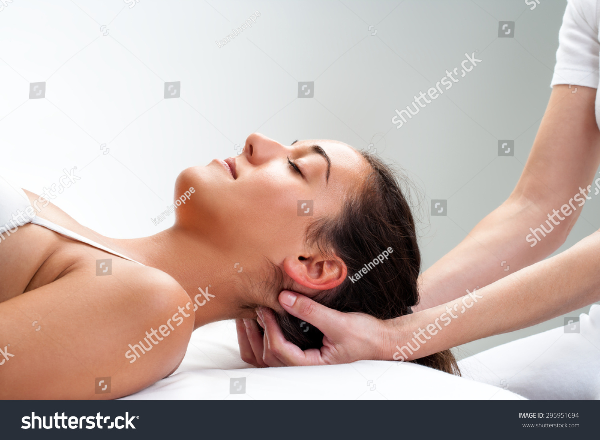
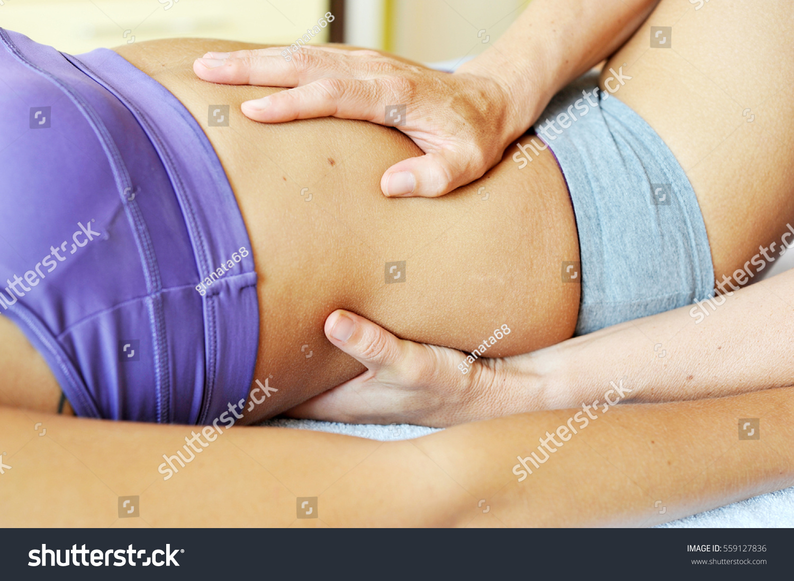
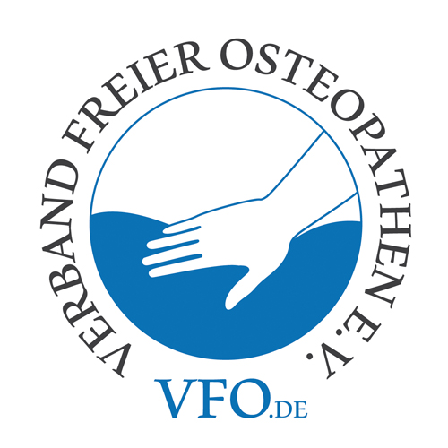

Osteopathie
Osteopthie stellt eine ganzheitliche mit den Händen angewandte Therapieform dar, die der Diagnostik und Behandlung von Funktionsstörungen dient.
In der Osteopathie hat neben dem aufsuchen von Dysfunktionen und deren Ursachen ,die Beseitigung von Störungen wesentliche Bedeutung. Die Störungen zeigen sich in Einschränkungen der Beweglichkeit einzelner Körperstrukturen ,wie Muskeln Organe, Gelenke und Faszien. Dies führt häufig zu Schmerzausstrahlungen, auch in nicht Betroffene Körperbereiche.
Vorrangiges Ziel ist demnach die Wiederherstellung der Bewegungsfähigkeit und die Harmonie des Körpers.
Dazu stehen dem Osteopath verschiedenste manuelle Techniken zur Verfügung,die in einer fünfjährigen Ausbildung ,neben umfangreichen Wissen in Anatomie Physiologie, Neurologie und Pathologie geleert werden. Die Einheit des Körpers besteht aus Osteopathischer Sicht aus Körper, Geist, Seele und um Welt. Alle Strukturen finden in der Behandlung Berücksichtigung.
Ein weiterer wichtiger Aspekt der Osteopathischen Therapie ist die Stärkung der Selbstheilungskraft und die Stimulation der Abwehrkräfte. Die Osteopathische Behandlung umfasst daher viele Teilbereiche des Körpers, die miteinander in Verbindung stehen und unterschiedliche Störungen aufzeigen können, so zum Beispiel:
Parietaler Bereich
Hierzu zählen Schulter Nackenschmerzen, Wirbelsäulenblockaden, Knieschmerzen, Hüftprobleme und Schmerzen und andere Gelenksprobleme, Bewegungeinschränkungen, Sehnenentzündungen, Krämpfe etc. hier kann der Osteopath mit manuellen Techniken sowie der Faszientherapie agieren.

Craniosacraler Bereich
Migräne, Kopfschmerzen, Schwindel, Ohrgeräusche, Tinitus, Kiefer Probleme, Schluckstörungen, Trigeminus Neuralgie etc.

Visceraler Bereich
Verklebungen nach Operationen, Sodbrennen, Blasensenkung, Nierensenkungen, Verdauungsprobleme Magenschmerzen, Atemstörungen, Reizdarm etc.
Mehr Informationen erhalten Sie unter Verband der freien Osteopathen Deutschland VFO.

Sie wünschen einen Termin?
Sie können mich unter der
Tel.-Nr. 05271 / 95 11 900
erreichen und Termine vereinbaren.
Ich bitte um Verständnis, dass sich mein Anrufbeantworter einschaltet, wenn sie außerhalb meiner Dienstzeiten anrufen oder ich mich gerade in einer Behandlung befinde, bitte hinterlassen Sie mir Ihre Telefonnummer und ihr Anliegen ich versuche sie umgehend zurückzurufen oder sie nutzen mein Kontaktformular/E-Mail.
Sollten Sie einen Termin nicht wahrnehmen können bitte ich Sie diesen mindestens 24 Stunden vorher, entweder über eine E-Mail, einen persönlichen Anruf oder eine kurze Information auf meinem Anrufbeantworter abzusagen. Nicht rechtzeitig abgesagte Termine die ich nicht anderweitig vergeben konnte, muss ich Ihnen leider in Rechnung stellen.
BEHANDLUNGSABLAUF
Ziel der Osteopathischen Behandlung ist neben der Wiederherstellung der Beweglichkeit und die Fähigkeit des Körpers seine Selbstheilung zu fördern, der freie Fluß von Körpersäften z.B. Blut, Lymphe, Verdauungssäften. In meiner Therapiestunde beginne ich in ruhiger entspannter Atmosphäre mit einem ausführlichen Gespräch, die Anamnese. Hierzu fülle ich mit Ihnen ein Befundbogen aus (wenn möglich diesen Befundbogen zu Hause soweit wie machbar ausfüllen). Daran schließt sich eine manuelle Funktionsuntersuchung an. In diesem Rahmen werde ich durch das Ertasten, Papieren von Gewebspannungen mögliche Dysfunktionen lokalisieren und gegebenfalls auch gezielt Funktionsbefunde der betroffenen Gelenke durchführen, deren Ergebnisse einen Hinweis auf die Ursache der Störung geben.
Ich untersuche den Bewegungsapparat (Gelenke Muskeln Bender Faszien) das Organsystem (innere Organe mit dazugehörigen Gefäßsystem Nerven und Lymphknoten) das cranio sakral alle System (mit Kopf Wirbelsäule und Kreuzbein)
Ziel der Diagnostik ist eine anschließende Zielgerichtete Osteopathische Behandlung. Es kann auch nötig sein zu weiteren Untersuchung sich in Fach ärztliche Behandlung zu begeben. Zur Behandlung gehören auch Hilfestellungen für den Alltag.
Ich terminiere stündlich. Die Behandlungsdauer richtet sich danach, wie ihr Organismus und ihre Beschwerden auf die Therapie reagieren. Ein Folgetermin wird in der Regel nach ein bis vier Wochen gesetzt.
Bitte bringen Sie ein großes Handtuch mit wichtig wären auch Arzt Befunde Röntgenbilder MRT Befund etc. wenn möglich drucken Sie sich zu Hause den Anamnesebogen aus und bringen ihn ausgefüllt zur ersten Therapiestunde mit, wir werden ihn dann gemeinsam durchgehen.

Kosten
Seit Inkrafttreten des Versorgungsstrukturgesetzes 2012 beteiligen sich gesetzliche Krankenkassen anteilig an den Kosten für Osteopathie. Voraussetzung dafür ist, das die Therapie durch einen Osteopath, mit anerkannter Ausbildung, welche 1350 Stunden beinhaltet und der durch einen Osteopathieverband vertreten ist. Als zertifiziertes Mitglied des Verbandes der freien Osteopathen erfülle ich die geforderten hohen Qualitätsstandards und bin dort auf der Therapeutenliste namentlich geführt.
Da jede Kasse eigene Vorgaben zur Kostenerstattung trägt, erkundigen Sie sich bitte unter www.Osteokompass.de und www.Krankenkassennetz.de GmbH oder Sie fragen bei ihrer Kasse bitte persönlich nach, ob und in welcher Höhe Erstattungen erfolgen.
Ich erstelle Rechnungen direkt an den Patient, die nach der Gebührenordnung für Heilpraktiker (GeBüH) für Privatversicherte, sowie nach der GVO (Gebührenverzeichnis für Osteopathie) für gesetzlich geregelt versicherte Patienten. Die Preishöhe richtet sich nach der Diagnose und der stattgefundenen Therapie und liegt zwischen 85 € und 150 €.
Der Rechnungsbetrag ist sofort nach der Behandlung in bar oder per EC Karte zu zahlen. Die quittierte Rechnung erhalten Sie als PDF Dokument per Mail.